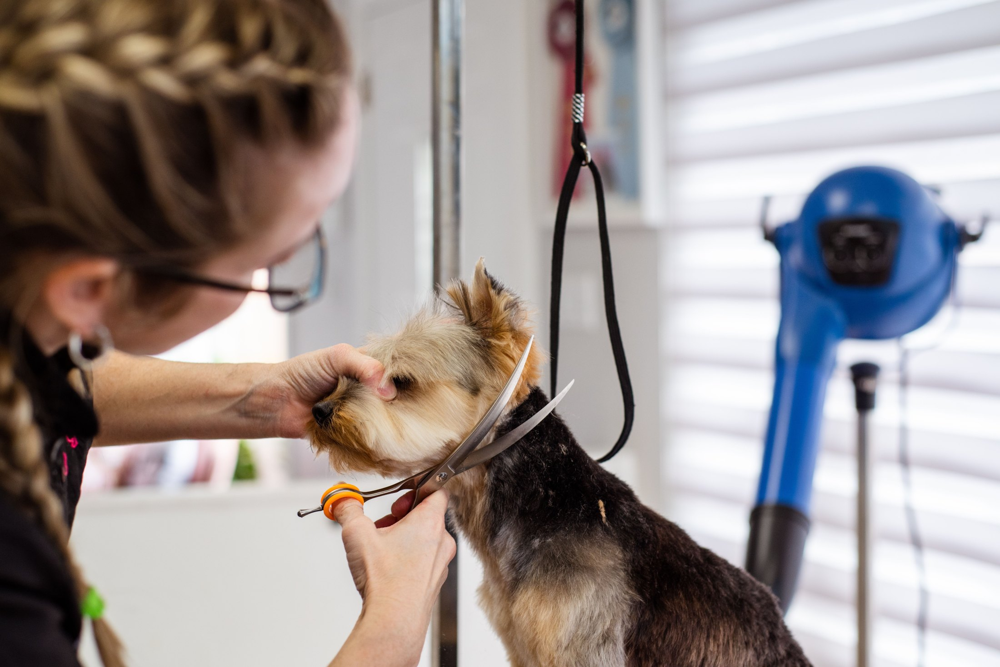
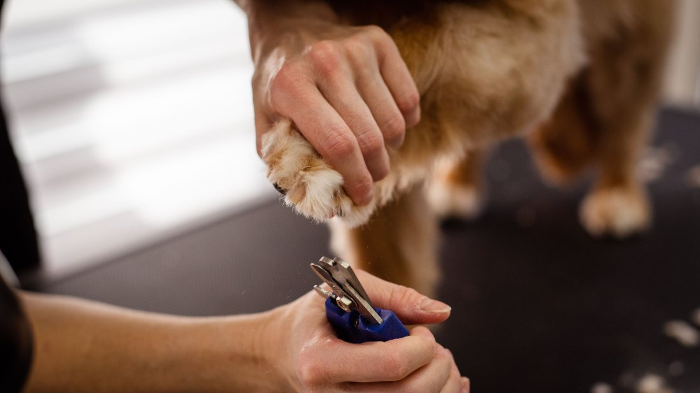
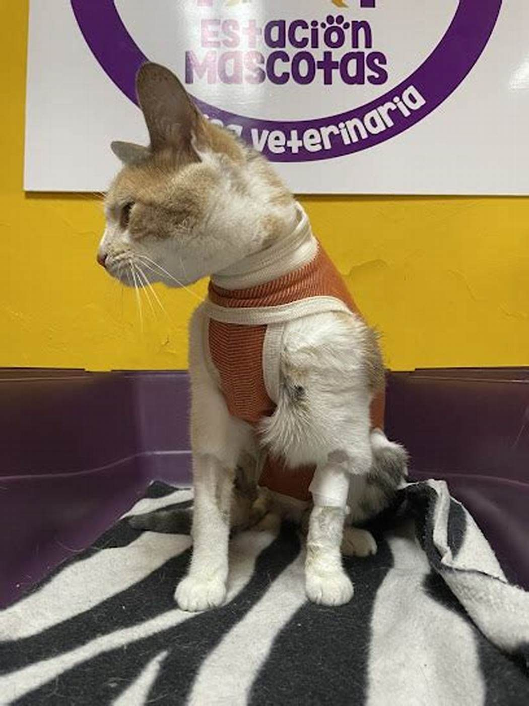

Peluquería y baño · Valdivia
¿A qué hora
lo paso a buscar?
Es la llamada que una peluquería recibe veinte veces al día, y la que más tiempo le quita a quien está trabajando con las manos mojadas. La respuesta se puede escribir una vez y dejar de contestarla para siempre.
- nota en Google
- 4,7
- reseñas
- 106
- teléfono
- (63) 221 3223
Dejar y retirar a la hora
Cuánto toma
Un baño con secado no dura lo mismo en un perro de cinco kilos que en uno de treinta, y con nudos puede durar el doble. Dicho antes, el dueño organiza su día — y deja de llamar cada media hora.
| Tamaño | Dura | Si se deja a las 10:00, se retira |
|---|---|---|
| Chicohasta unos 8 kg | 1:30 | 11:30 ej. |
| Medianohasta unos 20 kg | 2:00 | 12:00 ej. |
| Grandesobre 20 kg | 2:45 | 12:45 ej. |
| Con nudoscualquier tamaño | +1:00 | se avisa ej. |
Por qué los nudos se cobran y se demoran aparte. Un pelaje muy enredado no se peina: hay que desarmarlo mechón por mechón, y si está muy apretado contra la piel, muchas veces la única salida sin lastimar al animal es cortar. Explicarlo antes evita la escena de un dueño que llega y encuentra a su perro rapado sin haberlo esperado. falta: confirmar cómo lo manejan y qué avisan
Cuatro filas. Es la sección que convierte «llámenos» en «déjelo a las diez y pásela a buscar a las doce», que es lo que la gente necesita para poder venir.

Por qué se demora lo que se demora
El baño es rápido. Secar, no.
Un perro de pelo largo tarda más en el secador que en la tina, y ese es el tramo que nadie calcula cuando pregunta a qué hora lo pasa a buscar. Por eso el tiempo se cuenta por tipo de pelo y no por tamaño: un cocker chico puede llevar más que un labrador grande.
La idea grande
El tablero de hoy
Si el nombre es Estación, esto es lo que va con el nombre: un panel donde el dueño ve en qué va su perro sin llamar a nadie. No hace falta ningún sistema — basta con que alguien cambie una palabra cuatro veces al día.
| Hora | Nombre | Servicio | Estado |
|---|---|---|---|
| 09:30 | Nube | Baño y secado | Listo |
| 10:00 | Rocco | Baño y corte | Secándose |
| 10:30 | Kira | Baño | En baño |
| 11:00 | Simón | Corte con nudos | Recibido |
Cómo funcionaría de verdad. Cuatro estados y una persona que los cambia: recibido · en baño · secándose · listo. Se puede hacer en la misma página, en una pizarra fotografiada, o en un mensaje al grupo. Lo que vale no es la tecnología: es que el dueño sepa, sin llamar, que puede salir de la casa. falta: decidir si quieren esto y quién lo actualizaría
«¿A qué hora lo paso a buscar?»
Veinte veces al día, siempre la misma.

Para reservar hora
(63) 221 3223
Es el número publicado en su ficha de Google.


En la camilla
Fotos publicadas por la propia clínica. En las dos se ve el logo pegado en la pared del box: es su sala, no una foto prestada.

falta: la fachada con el letrero y una del mesón de recepción. Y la foto de la balanza con el peso a la vista — es el dato que el dueño quiere anotar.